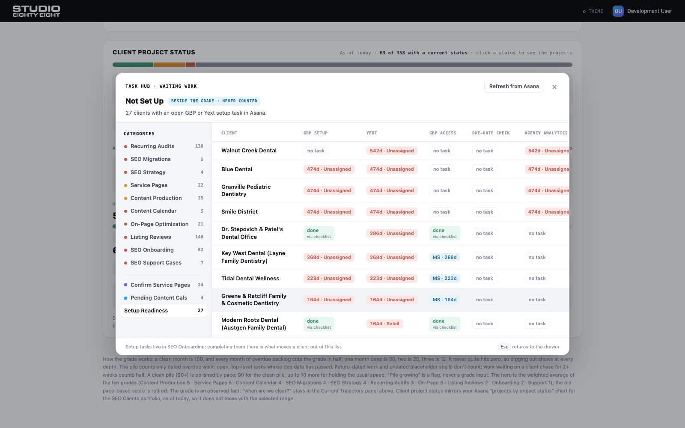
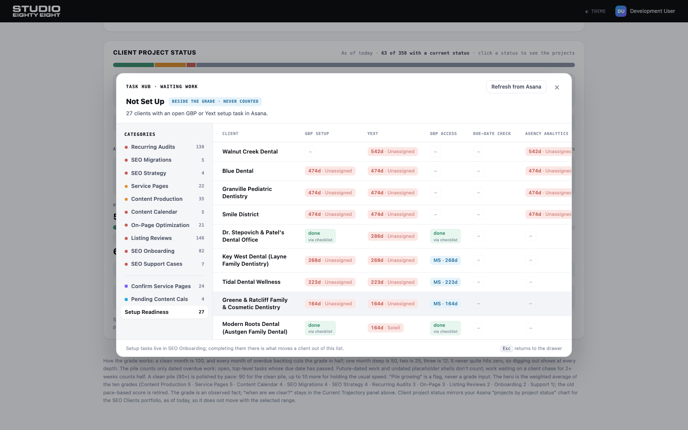
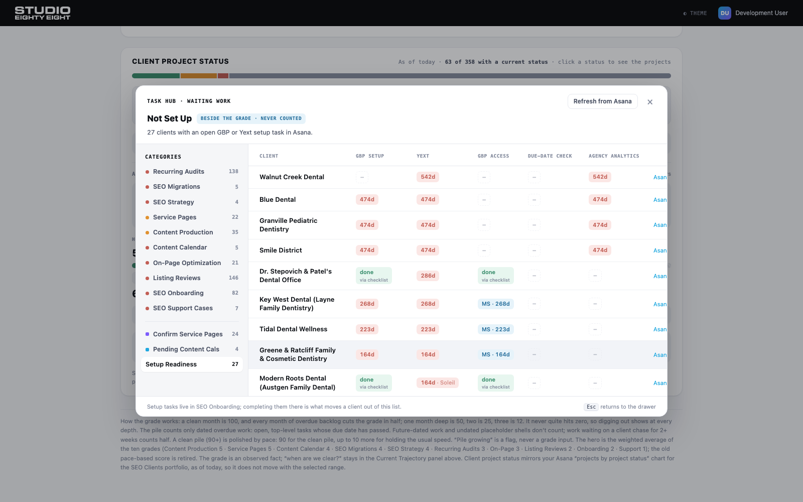
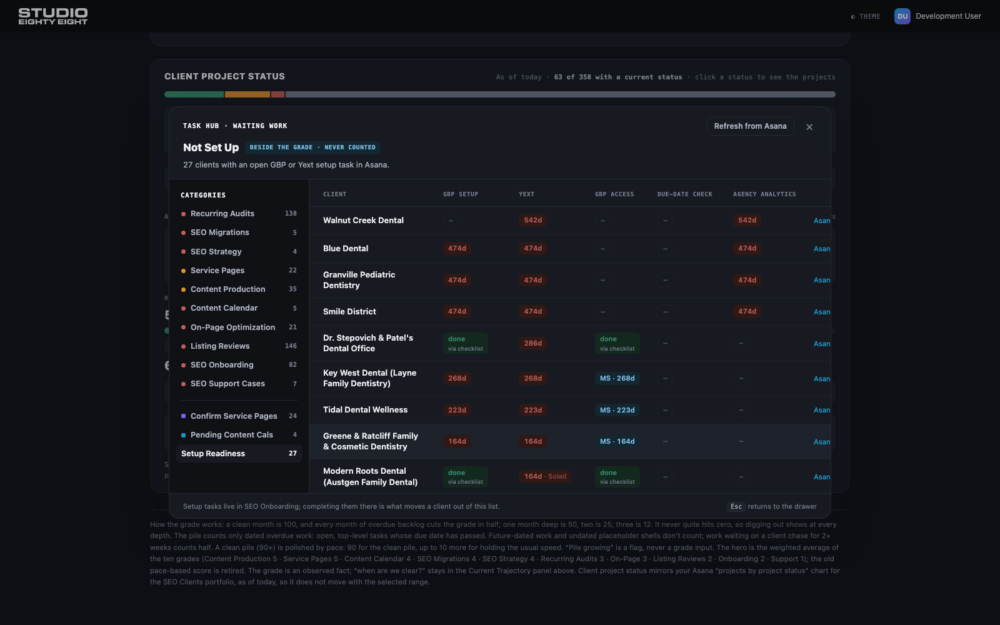

Live screenshots from the local app (real data, 27 clients). Nothing shipped yet; pick a direction.
Dashed “no task” chips repeat up to four per row, and “· Unassigned” appears at full weight in nearly every red chip. The Asana link column gets pushed off the right edge.

“no task” becomes a faint dash (hover says “No task in Asana”); “· Unassigned” stays but drops to muted weight. More explicit, still fairly wide.

Same quiet dashes, and a bare age chip (“542d”) simply means unassigned; a muted first name shows only when someone owns the task (“164d · Soleil”). Every column fits without side-scrolling, and the red chips become the only thing the eye lands on. MS access chips unchanged.

